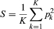
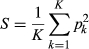

, Jost's D, and FST are similarly constrained by allele frequencies: A mathematical, simulation, and empirical study
, Jost's D, and FST are similarly constrained by allele frequencies: A mathematical, simulation, and empirical study
Abstract
Statistics  and Jost's D have been proposed for replacing FST
as measures of genetic differentiation. A principal argument in favour
of these statistics is the independence of their maximal values with
respect to the subpopulation heterozygosity HS, a property not shared by FST.
Nevertheless, it has been unclear if these alternative differentiation
measures are constrained by other aspects of the allele frequencies.
Here, for biallelic markers, we study the mathematical properties of the
maximal values of
and Jost's D have been proposed for replacing FST
as measures of genetic differentiation. A principal argument in favour
of these statistics is the independence of their maximal values with
respect to the subpopulation heterozygosity HS, a property not shared by FST.
Nevertheless, it has been unclear if these alternative differentiation
measures are constrained by other aspects of the allele frequencies.
Here, for biallelic markers, we study the mathematical properties of the
maximal values of  and D, comparing them to those of FST. We show that
and D, comparing them to those of FST. We show that  and D exhibit the same peculiar frequency‐dependence phenomena as FST,
including a maximal value as a function of the frequency of the most
frequent allele that lies well below one. Although the functions
describing
and D exhibit the same peculiar frequency‐dependence phenomena as FST,
including a maximal value as a function of the frequency of the most
frequent allele that lies well below one. Although the functions
describing  , D, and FST
in terms of the frequency of the most frequent allele are different,
the allele frequencies that maximize them are identical. Moreover, we
show using coalescent simulations that when taking into account the
specific maximal values of the three statistics, their behaviours become
similar across a large range of migration rates. We use our results to
explain two empirical patterns: the similar values of the three
statistics among North American wolves, and the low D values compared to
, D, and FST
in terms of the frequency of the most frequent allele are different,
the allele frequencies that maximize them are identical. Moreover, we
show using coalescent simulations that when taking into account the
specific maximal values of the three statistics, their behaviours become
similar across a large range of migration rates. We use our results to
explain two empirical patterns: the similar values of the three
statistics among North American wolves, and the low D values compared to  and FST
in Atlantic salmon. The results suggest that the three statistics are
often predictably similar, so that they can make quite similar
contributions to data analysis. When they are not similar, the
difference can be understood in relation to features of genetic
diversity.
and FST
in Atlantic salmon. The results suggest that the three statistics are
often predictably similar, so that they can make quite similar
contributions to data analysis. When they are not similar, the
difference can be understood in relation to features of genetic
diversity.
1 INTRODUCTION
Assessing the level of genetic differentiation among subpopulations is a fundamental topic in population genetics, molecular ecology, and conservation genetics. Genetic differentiation is used, for example, to detect genes under natural selection in different subpopulations (Lewontin & Krakauer, 1973), to quantify effects of gene flow and hybridization (Slatkin, 1993), and to detect effects of population fragmentation and to provide conservation recommendations (Frankham, Ballou, & Briscoe, 2002).
For decades, genetic differentiation has been measured most often using Wright's fixation index FST (Wright, 1951). In an informative framework provided by Nei (1973), an additive partition divides the total heterozygosity HT into a within‐subpopulation component, HS, and an among‐subpopulation component, DST:
From DST, Nei derived the measure of differentiation
Because the Wahlund effect (Wahlund, 1928) mathematically ensures that HT ≥ HS (as a consequence of the Cauchy–Schwarz inequality, Rosenberg & Calabrese, 2004), FST is restricted to lie in the unit interval from 0 to 1. Consequently, FST values are often interpreted using a scale from 0 to 1; for example, Wright (1978, p. 85) described the range 0.15–0.25 as indicating “moderately great differentiation,” and the range 0.25–1 as indicating “very great differentiation.”
Many studies, however, challenge this common interpretation of FST. It has been shown that the maximal FST for a specific locus is not always one, but a smaller value that varies with aspects of the genetic diversity at a locus, as measured by HS (Balloux, Brünner, Lugon‐Moulin, Hausser, & Goudet, 2000; Hedrick, 1999, 2005; Hedrick & Kalinowski, 2000; Jost, 2008; Long & Kittles, 2003; Maruki, Kumar, & Kim, 2012), HT (Edge & Rosenberg, 2014; Jakobsson, Edge, & Rosenberg, 2013), or other allele frequency statistics (Alcala & Rosenberg, 2017; Rosenberg, Li, Ward, & Pritchard, 2003). Consequently, interpreting FST values requires consideration of the value of HS or other summary statistics rather than a fixed scale.
Some have proposed ways of addressing this perceived flaw of FST. Wang (2015) suggested assessing if FST values at a set of loci are influenced by HS by testing for a significant correlation between the two statistics. A significant correlation is interpreted as indicating that FST is constrained by HS values rather than reflecting the level of genetic differentiation among populations. Although this test is promising for avoiding misinterpretations of FST (Whitlock, 2015), frameworks are still needed for interpretation of FST in cases with a significant correlation between FST and HS.
Others have proposed replacing FST by an alternative genetic differentiation measure whose maximal value does not depend on HS. Hedrick (2005) proposed standardizing FST by its maximum value given the observed value of HS and the number of subpopulations FST,max = [(K − 1)(1 − HS)]/(K − 1 + HS). The resulting measure, denoted  , is defined as:
, is defined as:
In a provocative and influential paper, Jost (2008) proposed another measure of genetic differentiation, relying on alternative measures of genetic diversity, the “effective numbers of alleles” within and among populations, denoted respectively by ΔS = 1/(1 − HS) and ΔT = 1/(1 − HT), rather than within‐ and among‐population heterozygosities HS and HT. He also advocated the use of a multiplicative partition of genetic diversity,
Jost's D can also be expressed using heterozygosities:
For convenience, we henceforth use D to indicate Jost's D as in Equation 3.
 and D are statistics whose maxima are not constrained by HS in the sense that irrespective of the value of HS,
they can range from 0 to 1. This property, however, does not ensure
that they are unconstrained by other aspects of allele frequencies. In
particular, recent studies have highlighted a dependence of the maximal FST on the frequency M of the most frequent allele in the total population at a locus.
and D are statistics whose maxima are not constrained by HS in the sense that irrespective of the value of HS,
they can range from 0 to 1. This property, however, does not ensure
that they are unconstrained by other aspects of allele frequencies. In
particular, recent studies have highlighted a dependence of the maximal FST on the frequency M of the most frequent allele in the total population at a locus.
Rosenberg et al. (2003, Equation 8) showed that for biallelic markers and two subpopulations, the maximum FST decreases monotonically from 1 to 0 as a function of M (see also Maruki et al., 2012). Jakobsson et al. (2013) showed that for a value of M chosen uniformly between 0 and 1, the mean maximum FST is approximately 0.3585; this maximum can be even lower if the number of alleles at the locus is specified (Edge & Rosenberg, 2014). For biallelic loci, Alcala and Rosenberg (2017) generalized these results to the case of an arbitrary number of subpopulations K. We showed that FST continues to have a maximum less than 1 irrespective of the value of M, with exceptions only at finitely many choices for M.
Here, we show that despite the emphasis of the derivations of  and D on eliminating the dependence of maximal values on HS, both quantities, like FST, have maxima less than 1 when considered as functions of M. We derive the maximum and minimum values of
and D on eliminating the dependence of maximal values on HS, both quantities, like FST, have maxima less than 1 when considered as functions of M. We derive the maximum and minimum values of  and D in terms of M, for a biallelic marker and an arbitrary number of subpopulations K. We then compare the mathematical constraints on
and D in terms of M, for a biallelic marker and an arbitrary number of subpopulations K. We then compare the mathematical constraints on  and D with analogous constraints on FST from Alcala and Rosenberg (2017), as functions of the number of subpopulations K. We simulate the joint distributions of M and
and D with analogous constraints on FST from Alcala and Rosenberg (2017), as functions of the number of subpopulations K. We simulate the joint distributions of M and  and of M and D, describing how
and of M and D, describing how  and D
values are distributed between their minimum and maximum values as
functions of the migration rate and the number of subpopulations in an
island migration model. We apply our results to show how they explain
discrepancies among FST,
and D
values are distributed between their minimum and maximum values as
functions of the migration rate and the number of subpopulations in an
island migration model. We apply our results to show how they explain
discrepancies among FST,  , and D
in two empirical examples: the population structure of wild North
American wolves and that of Atlantic salmon. We use our results to
provide recommendations on the use of the three statistics.
, and D
in two empirical examples: the population structure of wild North
American wolves and that of Atlantic salmon. We use our results to
provide recommendations on the use of the three statistics.
2 MATERIALS AND METHODS
Our goal is to derive the minimum and maximum values  and D can take as functions of the frequency M of the most frequent allele for a biallelic marker, when the number of subpopulations K is a fixed finite value greater than or equal to 2. Following similar derivations for FST (Alcala & Rosenberg, 2017), we consider a polymorphic locus with two alleles, A and a, segregating in a total population subdivided into K subpopulations that all contribute equally to the total. We denote the frequency of allele A in subpopulation k by pk. The frequency of allele a in subpopulation k is 1 − pk. Each allele frequency pk lies in the interval [0,1].
and D can take as functions of the frequency M of the most frequent allele for a biallelic marker, when the number of subpopulations K is a fixed finite value greater than or equal to 2. Following similar derivations for FST (Alcala & Rosenberg, 2017), we consider a polymorphic locus with two alleles, A and a, segregating in a total population subdivided into K subpopulations that all contribute equally to the total. We denote the frequency of allele A in subpopulation k by pk. The frequency of allele a in subpopulation k is 1 − pk. Each allele frequency pk lies in the interval [0,1].
The mean frequency of allele A across the subpopulations is , and the mean frequency of allele a is 1 − M. We assume that allele A is the more frequent allele in the total population, so that M ≥ 1/2 ≥ 1 − M. Because by assumption the locus is polymorphic, M ≠ 1. We denote the mean squared frequency of allele A across the subpopulations by .
We assume that the allele frequencies M and pk
are parametric allele frequencies of the total population and
subpopulations, and not estimated values computed from data. In
addition, we adopt an interpretation of FST,  , and D
as “statistics” that provide mathematical descriptions of the
apportionment of alleles among subpopulations, rather than as
“parameters” of an implicit or explicit population‐genetic model (Nei, 1986).
For this study, the “statistic” interpretation of differentiation
measures is favored because it enables descriptions of the relationships
of FST,
, and D
as “statistics” that provide mathematical descriptions of the
apportionment of alleles among subpopulations, rather than as
“parameters” of an implicit or explicit population‐genetic model (Nei, 1986).
For this study, the “statistic” interpretation of differentiation
measures is favored because it enables descriptions of the relationships
of FST,  , and D with other “statistics” such as the frequency M of the most frequent allele. It also permits evaluation of the relative impact on resulting values of FST,
, and D with other “statistics” such as the frequency M of the most frequent allele. It also permits evaluation of the relative impact on resulting values of FST,  , and D
of mathematical relationships between statistics—which we interpret as
mathematical “constraints”—separately from the impact of
population‐genetic models.
, and D
of mathematical relationships between statistics—which we interpret as
mathematical “constraints”—separately from the impact of
population‐genetic models.
3 RESULTS
3.1 Mathematical constraints on FST,  , and D
, and D
3.1.1 FST,  , and D as functions of M
, and D as functions of M
Equations 2 and 3 express  and D as functions of the within‐ and among‐subpopulation heterozygosities HS and HT. We express
and D as functions of the within‐ and among‐subpopulation heterozygosities HS and HT. We express  and D as functions of allele frequencies by substituting into Equations 2 and 3 the expressions for HS and HT (Nei, 1973):
and D as functions of allele frequencies by substituting into Equations 2 and 3 the expressions for HS and HT (Nei, 1973):
HS simplifies to HS = 2(M − S), and HT to HT = 2M(1 − M). Because we assume a polymorphic locus, 0 ≤ HS < 1 and 0 < HT < 1. We obtain:
For a given value of M, we search for the values of p1, p2, …, pK that minimize and maximize  and D across all possible sets of allele frequencies that produce mean frequency M for its most frequent allele. The minimal and maximal FST as functions of M are known from Alcala and Rosenberg (2017). We show in APPENDIX A that the minimal values of FST,
and D across all possible sets of allele frequencies that produce mean frequency M for its most frequent allele. The minimal and maximal FST as functions of M are known from Alcala and Rosenberg (2017). We show in APPENDIX A that the minimal values of FST,  , and D all equal 0 irrespective of M, for any value of the number of subpopulations K, and that this minimum is reached when alleles have the same frequency in all subpopulations: p1 = p2= … = pK = M.
, and D all equal 0 irrespective of M, for any value of the number of subpopulations K, and that this minimum is reached when alleles have the same frequency in all subpopulations: p1 = p2= … = pK = M.
3.1.2 Maximal values of FST,  , and D
, and D
From Alcala and Rosenberg (2017, Equation 5), letting denote the greatest integer less than or equal to x and writing , the maximum of FST in terms of M is:
The derivations of the maxima of  and D in terms of M proceed in three steps. (a) We show in APPENDIX B that
and D in terms of M proceed in three steps. (a) We show in APPENDIX B that  and D are increasing functions of S. (b) We employ Theorem 1 from Alcala and Rosenberg (2017), which provided the maximal S in terms of M used to obtain the maximal FST in terms of M (Alcala & Rosenberg, 2017, Equation 6). This theorem shows that ,
with equality requiring the most frequent allele to have frequency 1 or
0 in all subpopulations except at most one. (c) From (a) and (b), the
maximal
and D are increasing functions of S. (b) We employ Theorem 1 from Alcala and Rosenberg (2017), which provided the maximal S in terms of M used to obtain the maximal FST in terms of M (Alcala & Rosenberg, 2017, Equation 6). This theorem shows that ,
with equality requiring the most frequent allele to have frequency 1 or
0 in all subpopulations except at most one. (c) From (a) and (b), the
maximal  and D in terms of M are obtained by substituting the maximal S into Equations 7 and 8:
and D in terms of M are obtained by substituting the maximal S into Equations 7 and 8:
Interestingly, this derivation implies that for fixed M, FST,  , and D
are maximal under the same conditions: when the most frequent allele
has frequency 1 or 0 in all except possibly one subpopulation, so that
the locus is polymorphic in at most a single subpopulation. Thus, FST,
, and D
are maximal under the same conditions: when the most frequent allele
has frequency 1 or 0 in all except possibly one subpopulation, so that
the locus is polymorphic in at most a single subpopulation. Thus, FST,  , and D are all maximal when fixation is achieved in as many subpopulations as possible.
, and D are all maximal when fixation is achieved in as many subpopulations as possible.
3.1.3 Comparison of the maximal values of FST,  , and D
, and D
Figure 1 shows the maximal values of FST,  , and D in terms of M for various values of K. These maximal values have shared properties. FST (Alcala & Rosenberg, 2017, p. 1583),
, and D in terms of M for various values of K. These maximal values have shared properties. FST (Alcala & Rosenberg, 2017, p. 1583),  (Supporting Information File S1.1), and D (Supporting Information File S1.2–S1.4) all have peaks at values i/K, where i is an integer ranging in , where it is possible for the allele to be fixed in all K subpopulations. The maximum, treated as a function of M, is not a differentiable function at the peaks i/K (Supporting Information File S1.5); it is smooth and strictly below one between them (Supporting Information File S1.1 and S1.2). If K is even, then the maximal value has a local maximum at M = 1/2, whereas if K is odd, then M = 1/2 is a local minimum (Supporting Information File S1.3).
(Supporting Information File S1.1), and D (Supporting Information File S1.2–S1.4) all have peaks at values i/K, where i is an integer ranging in , where it is possible for the allele to be fixed in all K subpopulations. The maximum, treated as a function of M, is not a differentiable function at the peaks i/K (Supporting Information File S1.5); it is smooth and strictly below one between them (Supporting Information File S1.1 and S1.2). If K is even, then the maximal value has a local maximum at M = 1/2, whereas if K is odd, then M = 1/2 is a local minimum (Supporting Information File S1.3).
 , and D as functions of the frequency M of the most frequent allele, for different numbers of subpopulations K. The shaded region represents the space between the minimal and maximal values. The maximal FST,
, and D as functions of the frequency M of the most frequent allele, for different numbers of subpopulations K. The shaded region represents the space between the minimal and maximal values. The maximal FST,  , and D are computed from Equations 9–11-9–11, respectively. The dashed line represents 1 for FST and
, and D are computed from Equations 9–11-9–11, respectively. The dashed line represents 1 for FST and  , and 2KM(1 − M)/(K − 1) for D (Equation S1.4 in Supporting Information File S1); the maximum value touches the dashed line when M = i/K for integers i in . For FST,
, and 2KM(1 − M)/(K − 1) for D (Equation S1.4 in Supporting Information File S1); the maximum value touches the dashed line when M = i/K for integers i in . For FST,  , and D, for each K, the minimum value is 0 for all values of M
, and D, for each K, the minimum value is 0 for all values of MThe maximal values for the three statistics also have distinct properties. From Alcala and Rosenberg (2017, p. 1583), the peaks of the maximal FST reach one; the peaks of the maximal  also reach one (Supporting Information File S1.1), whereas the peaks of the maximal D are lower than 1, except if K = 2 (Supporting Information File S1.2). These peaks reach KHT/(K − 1) = 2KM(1 − M)/(K − 1) (Supporting Information File S1.4). Consequently, FST and
also reach one (Supporting Information File S1.1), whereas the peaks of the maximal D are lower than 1, except if K = 2 (Supporting Information File S1.2). These peaks reach KHT/(K − 1) = 2KM(1 − M)/(K − 1) (Supporting Information File S1.4). Consequently, FST and  are only unconstrained within the unit interval for finitely many values of the frequency M of the most frequent allele, and D is only unconstrained for a single combination of values of K and M, namely (K,M) = (2, 1/2).
are only unconstrained within the unit interval for finitely many values of the frequency M of the most frequent allele, and D is only unconstrained for a single combination of values of K and M, namely (K,M) = (2, 1/2).
For K = 2, the maximal FST,  , and D values are similar (Figure 1a–c): the maximum is 1 at M = 1/2, decreasing monotonically to 0 at M = 1. The maximal
, and D values are similar (Figure 1a–c): the maximum is 1 at M = 1/2, decreasing monotonically to 0 at M = 1. The maximal  is the highest of the statistics for all M (APPENDIX C); as a result,
is the highest of the statistics for all M (APPENDIX C); as a result,  is the least constrained measure. The maximal D exceeds the maximal FST for M < 3/4 and is lower for M > 3/4 (Appendix C). Hence, D is less constrained than FST for lower M but more constrained for higher M.
is the least constrained measure. The maximal D exceeds the maximal FST for M < 3/4 and is lower for M > 3/4 (Appendix C). Hence, D is less constrained than FST for lower M but more constrained for higher M.
The number of subpopulations K has different effects on the maximum values of FST,  , and D. The maximum of
, and D. The maximum of  tends to 1 when K → ∞ (Figure 1b,e,h,k,n and Supporting Information File S1.2), similarly to that of FST (Figure 1a,d,g,j,m; Alcala & Rosenberg, 2017); thus, constraints of M on the values of
tends to 1 when K → ∞ (Figure 1b,e,h,k,n and Supporting Information File S1.2), similarly to that of FST (Figure 1a,d,g,j,m; Alcala & Rosenberg, 2017); thus, constraints of M on the values of  disappear as K increases. By contrast, the maximal value of D tends to 2M(1 − M) = HT when K → ∞ (Figure 1c,f,i,l,o, and Supporting Information File S1.7): thus, constraints imposed by M on the values of D remain strong for all K.
disappear as K increases. By contrast, the maximal value of D tends to 2M(1 − M) = HT when K → ∞ (Figure 1c,f,i,l,o, and Supporting Information File S1.7): thus, constraints imposed by M on the values of D remain strong for all K.
3.1.4 Comparison of the range of possible values of FST,  , and D
, and D
We can summarize how much M constrains the range of  and D compared to FST by computing as functions of the number of subpopulations AG(K) and AD(K), the mean maximal
and D compared to FST by computing as functions of the number of subpopulations AG(K) and AD(K), the mean maximal  and D across all possible values of M. AG(K) gives the area between the minimal and maximal values of
and D across all possible values of M. AG(K) gives the area between the minimal and maximal values of  as a function of M divided by the length of the domain of possible M values, 1/2. This quantity is useful for comparing results with previous work on the constraints of FST (Alcala & Rosenberg, 2017; Edge & Rosenberg, 2014; Jakobsson et al., 2013). Values of AG(K) near one indicate that
as a function of M divided by the length of the domain of possible M values, 1/2. This quantity is useful for comparing results with previous work on the constraints of FST (Alcala & Rosenberg, 2017; Edge & Rosenberg, 2014; Jakobsson et al., 2013). Values of AG(K) near one indicate that  can range between 0 and 1 for most values of M, whereas small values indicate that
can range between 0 and 1 for most values of M, whereas small values indicate that  values are constrained to a small interval. AD(K) and AF(K) describe corresponding computations for D and FST.
values are constrained to a small interval. AD(K) and AF(K) describe corresponding computations for D and FST.
From Alcala and Rosenberg (2017, Equation 8), AF is:
We compute AG(K) and AD(K) from the upper bounds derived in the previous sections. Because the lower bound on  and D is 0 for all M between 1/2 and 1, AG(K) and AD(K) correspond to the areas under their respective maximal values divided by 1/2, or twice the integrals of Equations 10 and 11 over M. We compute AG(K) in Supporting Information File S2.1 and AD(K) in Supporting Information File S2.3:
and D is 0 for all M between 1/2 and 1, AG(K) and AD(K) correspond to the areas under their respective maximal values divided by 1/2, or twice the integrals of Equations 10 and 11 over M. We compute AG(K) in Supporting Information File S2.1 and AD(K) in Supporting Information File S2.3:
In Figure 2, we compare AG(K) and AD(K) to the area between the minimal and maximal FST as functions of M (Alcala & Rosenberg, 2017, Equation 9), denoted AF. We can see in the figure that AG is greater than AF for all K, particularly when K is small, whereas AF and AG are similar for large K. Thus,  is less constrained than FST by M when the number of subpopulations is small, and
is less constrained than FST by M when the number of subpopulations is small, and  and FST are comparably constrained when it is large. AD is seen to be lower than both AF (except at K = 2) and AG, and thus, D is more constrained than the other two measures.
and FST are comparably constrained when it is large. AD is seen to be lower than both AF (except at K = 2) and AG, and thus, D is more constrained than the other two measures.
 , and D, respectively, over the interval M ∊ [1/2, 1), as functions of the number of subpopulations K. AF(K) is computed from Equation
, and D, respectively, over the interval M ∊ [1/2, 1), as functions of the number of subpopulations K. AF(K) is computed from Equation The pattern of change in AD(K) as a function of K is distinct from those of AF(K) and AG(K). AD(K) decreases with K (Supporting Information File S2.4), whereas AF(K) increases with K for all K ≥ 2 (Alcala & Rosenberg, 2017, Theorem 3), and AG(K) increases with K at least for K ranging from 2 to 10,000 (Supporting Information File S2.2). As K becomes large, AD tends to 1/3, whereas AF approaches 1 (Alcala & Rosenberg, 2017, Equation 9), as does AG (Supporting Information File S2.2). Thus, unlike FST and  , D does not have a mean range extending over the whole unit interval when K is large. On the other hand, of the three statistics, AD(K) has the least change as a function of K, decreasing from
, D does not have a mean range extending over the whole unit interval when K is large. On the other hand, of the three statistics, AD(K) has the least change as a function of K, decreasing from  to 1/3 (Figure 2), whereas AF(K) increases from 2 log 2 − 1 ≈ 0.38629 to 1 and AG(K) increases from (3−2 log 2)/3 ≈ 0.53790 to 1. Thus, the constraint imposed by M on D is more consistent across values of K than are the constraints on the other two measures.
to 1/3 (Figure 2), whereas AF(K) increases from 2 log 2 − 1 ≈ 0.38629 to 1 and AG(K) increases from (3−2 log 2)/3 ≈ 0.53790 to 1. Thus, the constraint imposed by M on D is more consistent across values of K than are the constraints on the other two measures.
3.2 Simulation‐based distributions of FST,  , and D
, and D
To illustrate the mathematical properties of differentiation measures FST,  , and D in the context of evolutionary models, we simulated the joint distribution of each quantity with M
under an island migration model, and we compared the distribution to
the mathematical minima and maxima of the statistics. This analysis
considers allele frequency distributions generated by evolutionary
models, rather than treating M as uniformly distributed in [1/2,1).
, and D in the context of evolutionary models, we simulated the joint distribution of each quantity with M
under an island migration model, and we compared the distribution to
the mathematical minima and maxima of the statistics. This analysis
considers allele frequency distributions generated by evolutionary
models, rather than treating M as uniformly distributed in [1/2,1).
We simulated independent single‐nucleotide polymorphisms
(SNPs) under the coalescent using the protocol of Alcala and Rosenberg (2017). Using the software ms (Hudson, 2002), we simulated a population of total size KN diploid individuals subdivided into K subpopulations of equal size N, with migration following the finite island model (Maruyama, 1970; Wakeley, 1998) with migration rate m in each direction between each pair of subpopulations. We examined three K values (2, 7, 40) and three 4Nm values (0.1, 1, 10). We simulated conditional on producing one segregating site in each simulation. For each parameter pair (K,4Nm),
we performed 100,000 replicate simulations, sampling 100 lineages per
subpopulation (corresponding to 50 diploid individuals) in each
replicate. ms commands appear in Supporting Information File S3. Because we do not investigate estimation of allele frequencies from data, FST,  , and D values were computed assuming that the empirical allele frequencies were parametric allele frequencies.
, and D values were computed assuming that the empirical allele frequencies were parametric allele frequencies.
3.2.1 Weak migration for K = 2
As shown by Alcala and Rosenberg (2017), and seen here in Figure 3a, for K = 2, under weak migration (4Nm = 0.1), the joint density of M and FST is greatest near the maximum of FST as a function of M. We can see in Figure 3b,c that the joint densities of M and  and of M and D are also highest near their respective maxima as functions of M. For the three statistics, most loci have M near 1/2, indicating that one allele is fixed in one subpopulation and the other is fixed in the second subpopulation, and FST,
and of M and D are also highest near their respective maxima as functions of M. For the three statistics, most loci have M near 1/2, indicating that one allele is fixed in one subpopulation and the other is fixed in the second subpopulation, and FST,  , and D are near 1 (orange areas in Figure 3a–c). The mean FST,
, and D are near 1 (orange areas in Figure 3a–c). The mean FST,  , and D values in sliding windows for M (red dashed lines in Figure 3a–c) closely follow their respective maxima. Because the maximal values of the three statistics are similar for K = 2, the joint densities are also similar.
, and D values in sliding windows for M (red dashed lines in Figure 3a–c) closely follow their respective maxima. Because the maximal values of the three statistics are similar for K = 2, the joint densities are also similar.
 , and D, for different scaled migration rates 4Nm, considering K = 2 subpopulations. The black solid line represents the maximum value of FST,
, and D, for different scaled migration rates 4Nm, considering K = 2 subpopulations. The black solid line represents the maximum value of FST,  , or D in terms of M (Equations 9–11-9–11); the red dashed line represents the mean FST,
, or D in terms of M (Equations 9–11-9–11); the red dashed line represents the mean FST,  , and D in sliding windows of M
of size 0.02 (plotted from 0.51 to 0.99). Colours represent the density
of loci, estimated using a Gaussian kernel density estimate with a
bandwidth of 0.007, with density set to 0 outside the minimum and
maximum values. Loci are simulated using coalescent software ms,
assuming an island model of migration and conditioning on one
segregating site. Each panel considers 100,000 replicate simulations,
with 100 lineages sampled per subpopulation
, and D in sliding windows of M
of size 0.02 (plotted from 0.51 to 0.99). Colours represent the density
of loci, estimated using a Gaussian kernel density estimate with a
bandwidth of 0.007, with density set to 0 outside the minimum and
maximum values. Loci are simulated using coalescent software ms,
assuming an island model of migration and conditioning on one
segregating site. Each panel considers 100,000 replicate simulations,
with 100 lineages sampled per subpopulation
The conditions under which the maximal values of FST,  , and D
are reached provide an explanation of these observations. We showed
that the maximal values of the three statistics are reached under the
same condition—when alleles are fixed in one or sometimes both
subpopulations. Under weak migration, we expect the derived allele to be
trapped in its subpopulation of origin, and the ancestral allele to be
fixed in the other subpopulation. This situation matches the conditions
under which FST,
, and D
are reached provide an explanation of these observations. We showed
that the maximal values of the three statistics are reached under the
same condition—when alleles are fixed in one or sometimes both
subpopulations. Under weak migration, we expect the derived allele to be
trapped in its subpopulation of origin, and the ancestral allele to be
fixed in the other subpopulation. This situation matches the conditions
under which FST,  , and D reach their maximal values as functions of M.
, and D reach their maximal values as functions of M.
3.2.2 Intermediate migration for K = 2
For K = 2, under intermediate migration (4Nm = 1), the joint densities of M and FST, M and  , and M and D are the highest between their respective minimum and maximum values as functions of M (Figure 3d–f). The mean FST,
, and M and D are the highest between their respective minimum and maximum values as functions of M (Figure 3d–f). The mean FST,  , and D values in sliding windows for M are almost equidistant from the minimal and maximal values, approaching closer to the maximum when M nears 1 (red dashed line in Figure 3d–f).
, and D values in sliding windows for M are almost equidistant from the minimal and maximal values, approaching closer to the maximum when M nears 1 (red dashed line in Figure 3d–f).
Under intermediate migration, we expect the derived
allele to segregate into the two subpopulations, but to still be at
higher frequency in its subpopulation of origin. Consequently, the
condition under which FST,  , and D reach their maximum as a function of M
is not attained. The condition under which the statistics reach their
minimum—equal allele frequencies in all subpopulations—is not expected
to be attained either, resulting in FST,
, and D reach their maximum as a function of M
is not attained. The condition under which the statistics reach their
minimum—equal allele frequencies in all subpopulations—is not expected
to be attained either, resulting in FST,  , and D between their minimum and maximum values.
, and D between their minimum and maximum values.
3.2.3 Strong migration for K = 2
Continuing with K = 2, under strong migration (4Nm = 10), the three joint densities are the highest near their respective minima as functions of M (Figure 3g–i). The mean FST,  , and D in sliding windows for M are near their minimal values (red dashed line in Figure 3g–i).
, and D in sliding windows for M are near their minimal values (red dashed line in Figure 3g–i).
Under strong migration, we expect the derived allele
to segregate into the two subpopulations approximately at the same
frequency. Consequently, the condition under which FST,  , and D reach their minima as functions of M—equal allele frequencies in all subpopulations—is attained.
, and D reach their minima as functions of M—equal allele frequencies in all subpopulations—is attained.
3.2.4 Weak, intermediate, and strong migration for K > 2
For K = 7, the joint densities of M and FST, M and  , and M and D follow a similar pattern to that seen for K = 2:
the densities lie near the maximal value of their statistics under weak
migration, between the minimum and maximum under intermediate
migration, and near the minimum under strong migration (Figure 4). Under weak migration, most loci have M
near 4/7, 5/7, or 6/7, indicating allele fixation in all
subpopulations. Nevertheless, because the maximal values of the three
statistics differ greatly, their values under weak migration are quite
different: most loci have FST ≈ 1 and , but D < 0.5.
, and M and D follow a similar pattern to that seen for K = 2:
the densities lie near the maximal value of their statistics under weak
migration, between the minimum and maximum under intermediate
migration, and near the minimum under strong migration (Figure 4). Under weak migration, most loci have M
near 4/7, 5/7, or 6/7, indicating allele fixation in all
subpopulations. Nevertheless, because the maximal values of the three
statistics differ greatly, their values under weak migration are quite
different: most loci have FST ≈ 1 and , but D < 0.5.
 , and D, for different scaled migration rates 4Nm, considering K = 7 subpopulations. The simulation procedure and figure design follow Figure 3
, and D, for different scaled migration rates 4Nm, considering K = 7 subpopulations. The simulation procedure and figure design follow Figure 3For K = 40, the joint
densities also lie near the maximum under weak migration, between the
minimum and maximum under intermediate migration, and near the minimum
under strong migration (Supporting Information Figure S1). Under weak migration, loci have M values that range from 1/2 to 1. Because the maxima of FST and  are similar, their values under weak migration are also similar: most loci have FST ≈ 1 and . By contrast, D < 0.5.
are similar, their values under weak migration are also similar: most loci have FST ≈ 1 and . By contrast, D < 0.5.
Interestingly, comparing the densities of M and D under weak migration as a function of K we can see that the values of D are more weakly influenced by K (Figures 3c, 4c, and Supporting Information Figure S1C). By contrast, the values of FST and  are more strongly influenced by K (Figures 3a, 4a, and Supporting Information Figure S1a and Figures 3b, 4b, and Supporting Information Figure S1b).
are more strongly influenced by K (Figures 3a, 4a, and Supporting Information Figure S1a and Figures 3b, 4b, and Supporting Information Figure S1b).
3.2.5 Proximity of FST,  , and D to their maximum values
, and D to their maximum values
To measure the impact of evolutionary processes on FST,  , and D values and to summarize Figures 3 and 4 and Supporting Information Figure S1, we quantified the proximity of the joint densities of M and FST, M and
, and D values and to summarize Figures 3 and 4 and Supporting Information Figure S1, we quantified the proximity of the joint densities of M and FST, M and  , and M and D to their maximum value as a function of M across a range of migration rates and numbers of subpopulations.
, and M and D to their maximum value as a function of M across a range of migration rates and numbers of subpopulations.
We denote by ,  , and the mean values of FST,
, and the mean values of FST,  , and D across a set of Z loci, respectively. To be precise, these means are obtained by computing Fz,
, and D across a set of Z loci, respectively. To be precise, these means are obtained by computing Fz,  , and Dz—the values of FST,
, and Dz—the values of FST,  , and D for biallelic loci z—for each z from 1 to Z, and averaging Fz, , and Dz across the Z loci (Equations D1 and D2 in Appendix D). The corresponding mean maximal FST,
, and D for biallelic loci z—for each z from 1 to Z, and averaging Fz, , and Dz across the Z loci (Equations D1 and D2 in Appendix D). The corresponding mean maximal FST,  , and D across the Z loci are denoted . They are computed by substituting the observed frequency Mz of the most frequent allele at loci z = 1, 2, …, Z into the expression for the maximal FST (Equation 9),
, and D across the Z loci are denoted . They are computed by substituting the observed frequency Mz of the most frequent allele at loci z = 1, 2, …, Z into the expression for the maximal FST (Equation 9),  (Equation 10), and D (Equation 11), and averaging the values over the Z loci (Equations D3 and D4 in Appendix D). We computed , , and , which we describe as normalized statistics, across a range of values of K (2, 10, and 100) and scaled migration rates (0.01–100; Figure 5).
(Equation 10), and D (Equation 11), and averaging the values over the Z loci (Equations D3 and D4 in Appendix D). We computed , , and , which we describe as normalized statistics, across a range of values of K (2, 10, and 100) and scaled migration rates (0.01–100; Figure 5).
 ,
,  , and
, and  across biallelic loci. (a) Unnormalized means , , and
across biallelic loci. (a) Unnormalized means , , and  . (b) Normalized means , , and , the ratio of the mean value to the mean maximal value given the observed frequency M of the most frequent allele. Both plots show quantities as functions of the number of subpopulations K and the scaled migration rate 4Nm. Colours represent the different statistics. Line types represent values of K: 2 (solid), 7 (dashed), and 40 (dotted). Values are computed from coalescent simulations using software ms as in Figure 3, with 1,000 replicate biallelic loci and 100 lineages per subpopulation. , , and are respectively computed from equation 11 of Alcala and Rosenberg (2017) and Equations D3 and D4 in Appendix D
. (b) Normalized means , , and , the ratio of the mean value to the mean maximal value given the observed frequency M of the most frequent allele. Both plots show quantities as functions of the number of subpopulations K and the scaled migration rate 4Nm. Colours represent the different statistics. Line types represent values of K: 2 (solid), 7 (dashed), and 40 (dotted). Values are computed from coalescent simulations using software ms as in Figure 3, with 1,000 replicate biallelic loci and 100 lineages per subpopulation. , , and are respectively computed from equation 11 of Alcala and Rosenberg (2017) and Equations D3 and D4 in Appendix DInterestingly, for a fixed 4Nm, ratios are similar for the three measures across all values of K (Figure 5b). The largest difference between FST and  values is 0.07 and is reached when 4Nm = 1; the largest difference between D and
values is 0.07 and is reached when 4Nm = 1; the largest difference between D and  is 0.06, also when 4Nm = 1. Thus, all three measures provide similar information once their mathematical constraints are taken into account.
is 0.06, also when 4Nm = 1. Thus, all three measures provide similar information once their mathematical constraints are taken into account.
3.3 Application to data
We now use two SNP data sets to illustrate how our findings can explain patterns in genomic data.
3.3.1 K = 2: wolf and dog
The first data set (Cronin, Cánovas, Bannasch, Oberbauer, & Medrano, 2015) consists of samples from 305 North American wild wolves (Canis lupus) and 91 dogs (Canis familiaris; 36 mixed‐breed dogs, 53 poodles, one Australian shepherd, and one Border collie). The wolves and dogs are typed at 123,801 biallelic loci. This example illustrates the dependence of the constraints of the differentiation measures on M when performing pairwise comparisons.
The joint densities of M and FST, M and  , and M and D appear in Figure 6a–c. Most loci have relatively large values of M, for which the differentiation statistics are tightly constrained. As we saw using coalescent simulations (Figure 3), values of FST,
, and M and D appear in Figure 6a–c. Most loci have relatively large values of M, for which the differentiation statistics are tightly constrained. As we saw using coalescent simulations (Figure 3), values of FST,  , and D are globally close;
, and D are globally close;  values are the largest of the three measures for all M, D exceeds FST for intermediate M, and FST exceeds D for high M.
values are the largest of the three measures for all M, D exceeds FST for intermediate M, and FST exceeds D for high M.
 , and D),
and unnormalized and normalized mean values of the differentiation
measures across loci, for 305 wolves and 91 dogs from North America,
using 123,801 SNPs. (a) M and FST. (b) M and
, and D),
and unnormalized and normalized mean values of the differentiation
measures across loci, for 305 wolves and 91 dogs from North America,
using 123,801 SNPs. (a) M and FST. (b) M and  . (c) M and D. (d) Unnormalized mean values of FST,
. (c) M and D. (d) Unnormalized mean values of FST,  , and D across SNPs, and the mean values of FST,
, and D across SNPs, and the mean values of FST,  , and D across SNPs normalized by the mean of their maximal values. In (a–c), the figure design follows Figure 3. In (d), , , and are respectively computed from equation 11 of Alcala and Rosenberg (2017) and Equations D3 and D4 in Appendix D
, and D across SNPs normalized by the mean of their maximal values. In (a–c), the figure design follows Figure 3. In (d), , , and are respectively computed from equation 11 of Alcala and Rosenberg (2017) and Equations D3 and D4 in Appendix DIn addition, we can see in Figure 6D that normalizing the mean FST,  , and D increases their values considerably. As we observed in the simulations (Figure 5),
, and D increases their values considerably. As we observed in the simulations (Figure 5),  values are slightly closer to their maxima than are FST and D values.
values are slightly closer to their maxima than are FST and D values.
3.3.2 K > 2: Atlantic salmon
The second data set consists of 900 Atlantic salmon (Salmo salar) sampled from 26 populations (Bourret et al., 2013) and typed at 1,335 biallelic loci. This example illustrates the constraints of the measures when many subpopulations are considered.
The joint densities of M with FST,  , and D appear in Figure 7a–c. As was seen in coalescent simulations (Figure 4), values of FST and
, and D appear in Figure 7a–c. As was seen in coalescent simulations (Figure 4), values of FST and  are close, with larger
are close, with larger  ; D values are lower than both FST and for all M.
; D values are lower than both FST and for all M.
 , and D),
and unnormalized and normalized mean values of the differentiation
measures across loci, for 900 Atlantic salmon from 26 populations, using
1,335 SNPs. Sample sizes range from 25 to 40 per population. (a) M and FST. (b) M and
, and D),
and unnormalized and normalized mean values of the differentiation
measures across loci, for 900 Atlantic salmon from 26 populations, using
1,335 SNPs. Sample sizes range from 25 to 40 per population. (a) M and FST. (b) M and  . (c) M and D. (d) Mean values of FST,
. (c) M and D. (d) Mean values of FST,  , and D across SNPs, for sets of geographic regions as a function of K, the number of regions considered. (e) Ratio of mean values of FST,
, and D across SNPs, for sets of geographic regions as a function of K, the number of regions considered. (e) Ratio of mean values of FST,  , and D across SNPs to their maximal mean values as functions of K. In (a–c), the figure design follows Figure 3. Coloured bars in (d) and (e) represent 2.5 and 97.5 quantiles of distributions of values across sets of size K. In (e),
, and D across SNPs to their maximal mean values as functions of K. In (a–c), the figure design follows Figure 3. Coloured bars in (d) and (e) represent 2.5 and 97.5 quantiles of distributions of values across sets of size K. In (e),  ,
,  , and
, and  are respectively computed from equation 11 of Alcala and Rosenberg (2017) and Equations D3 and D4 in Appendix D
are respectively computed from equation 11 of Alcala and Rosenberg (2017) and Equations D3 and D4 in Appendix DFigure 7d,e illustrate the impact of the number of subpopulations on values of FST,  , and D. The figure represents the mean FST,
, and D. The figure represents the mean FST,  , and D values across loci for sets of K salmon subpopulations among the 26 subpopulations, for K
ranging from 2 to 26. For computational simplicity, when the number of
possible sets exceeded 10,000, we randomly chose without replacement
10,000 sets to compute the three measures. We can see in Figure 7d that the values of FST and
, and D values across loci for sets of K salmon subpopulations among the 26 subpopulations, for K
ranging from 2 to 26. For computational simplicity, when the number of
possible sets exceeded 10,000, we randomly chose without replacement
10,000 sets to compute the three measures. We can see in Figure 7d that the values of FST and  depend more strongly on the value of K, whereas the values of D are weakly affected by K. In addition, we can see in Figure 7e that even though the mean values of D are smaller than those of FST and
depend more strongly on the value of K, whereas the values of D are weakly affected by K. In addition, we can see in Figure 7e that even though the mean values of D are smaller than those of FST and  , they are comparably close to the maximum value as the means of FST and
, they are comparably close to the maximum value as the means of FST and  . Also, as we showed with coalescent simulations (Figure 5),
. Also, as we showed with coalescent simulations (Figure 5),  values are slightly closer to their associated maximal values than are D and FST.
values are slightly closer to their associated maximal values than are D and FST.
4 DISCUSSION
We have shown that for biallelic markers and arbitrary numbers of subpopulations K, the maximal values of  and D are both lower than 1 for most frequencies M of the most frequent allele. We have described the properties of the maximal values of
and D are both lower than 1 for most frequencies M of the most frequent allele. We have described the properties of the maximal values of  and D as functions of M, and compared them with that of FST. We have shown that
and D as functions of M, and compared them with that of FST. We have shown that  is the least constrained by M, and that D is the most constrained. Despite these differences, the allele frequencies that minimize and maximize
is the least constrained by M, and that D is the most constrained. Despite these differences, the allele frequencies that minimize and maximize  and D are the same. Using coalescent simulations and two data examples, we have shown that values of FST,
and D are the same. Using coalescent simulations and two data examples, we have shown that values of FST,  , and D normalized by their respective maxima given M are more similar to each other than are their unnormalized counterparts.
, and D normalized by their respective maxima given M are more similar to each other than are their unnormalized counterparts.
Contrary to the claim of Jost (2008), D does not eliminate all counterintuitive phenomena observed with FST: we exhibit domains of M under which the maximal D is well below 1. One possible explanation of this discrepancy is that examples in Jost (2008) focused on cases with either many alleles or K = 2 subpopulations, whereas we find strong constraints on D in the case of a biallelic marker and K > 2. Moreover, despite the strong arguments of Jost (2008) about the importance of “mathematical misconceptions” underlying the construction of FST, we find that FST,  , and D have similar behaviour once we account for their respective maximal values as functions of M. Note that because HT = 2M(1 − M) for biallelic markers, M uniquely specifies HT and HT uniquely specifies M; thus, our results describing constraints on FST,
, and D have similar behaviour once we account for their respective maximal values as functions of M. Note that because HT = 2M(1 − M) for biallelic markers, M uniquely specifies HT and HT uniquely specifies M; thus, our results describing constraints on FST,  , and D as functions of M can also be viewed as constraints as functions of HT.
, and D as functions of M can also be viewed as constraints as functions of HT.
Although  and D are not constrained by the value of the within‐subpopulation heterozygosity HS,
we have shown that both statistics are constrained by allele
frequencies in other ways. It does not follow that a measure that has no
constraints in terms of HS has no constraints at all; the differentiation measures that have been proposed to supplant FST present some degree of constraint in terms of M or HT
and are thus subject to analogous criticism. Possibly, any
differentiation measure would possess some constraint. This result
accords with the conclusion of Meirmans and Hedrick (2011) that a summary statistic unconstrained in relation to all aspects of allele frequencies probably does not exist.
and D are not constrained by the value of the within‐subpopulation heterozygosity HS,
we have shown that both statistics are constrained by allele
frequencies in other ways. It does not follow that a measure that has no
constraints in terms of HS has no constraints at all; the differentiation measures that have been proposed to supplant FST present some degree of constraint in terms of M or HT
and are thus subject to analogous criticism. Possibly, any
differentiation measure would possess some constraint. This result
accords with the conclusion of Meirmans and Hedrick (2011) that a summary statistic unconstrained in relation to all aspects of allele frequencies probably does not exist.
Focusing on the frequency M of the most frequent allele enables a coalescent interpretation of constraints on differentiation statistics. In a coalescent framework, for a locus at which alleles arise as unique mutations, fixing M corresponds to fixing the number of sampled lineages containing an allele, inducing a distribution of the time depth at which a mutation arose. Genetic differentiation statistics conditional on different values of M can then be viewed as examining constraints on differentiation for loci whose alleles have originated at different times. In this coalescent interpretation, normalization by the maximum value given M enables comparisons of the values of the statistics irrespective of the depth at which a mutation appeared in the gene tree. Thus, both the values of differentiation statistics conditionally on M and the values of those statistics normalized by their maxima given M are potentially useful in disentangling the relative impacts of ancient and recent evolutionary events on patterns of polymorphism. Note that this perspective is distinct from the usual coalescent‐based interpretation of Slatkin (1991), in which FST statistics are computed in sequence regions rather than pointwise and have a more direct interpretation in relation to coalescence times.
We found that the three differentiation measures have similar values when comparing pairs of subpopulations (K = 2)
using biallelic loci. Indeed, both the mathematical constraints and the
distributions generated by common biological processes produce similar
values of FST,  , and D.
Consequently, it appears that choosing one measure among the three is
not very important when considering biallelic loci and performing
pairwise population comparisons. This result contrasts with that of
Table 1 of Jost (2008), which showed that FST and D can give very different results when K = 2, but considering multiallelic loci. Extending our results to the case of K = 2 and multiallelic loci using the framework laid out in Jakobsson et al. (2013) and Edge & Rosenberg (2014) could potentially solve this apparent discrepancy that the statistics are similar when considering a biallelic locus and K = 2 but different when considering a multiallelic locus and K = 2.
, and D.
Consequently, it appears that choosing one measure among the three is
not very important when considering biallelic loci and performing
pairwise population comparisons. This result contrasts with that of
Table 1 of Jost (2008), which showed that FST and D can give very different results when K = 2, but considering multiallelic loci. Extending our results to the case of K = 2 and multiallelic loci using the framework laid out in Jakobsson et al. (2013) and Edge & Rosenberg (2014) could potentially solve this apparent discrepancy that the statistics are similar when considering a biallelic locus and K = 2 but different when considering a multiallelic locus and K = 2.
We highlight a trade‐off in the properties of differentiation statistics based on biallelic loci: D values are the least sensitive to the effect of the number of subpopulations K,
but the most strongly constrained. Knowing this trade‐off can
potentially help users choose among statistics. For example, if the goal
is to compare differentiation among species with various distinct
numbers of subpopulations, then D could be the most useful, whereas FST and  could be more suitable for providing a wider range of values in comparisons with the same value of K.
could be more suitable for providing a wider range of values in comparisons with the same value of K.
Modified FST statistics that incorporate the number of subpopulations have previously been suggested. In Supporting Information File S4, we examine two alternative statistics, due to Nei (1987) and due to Meirmans and Hedrick (2011), designed as modified versions of FST and  , respectively, and both incorporating a factor dependent on the number of subpopulations. We show that and are constrained by the value of M similarly to FST and
, respectively, and both incorporating a factor dependent on the number of subpopulations. We show that and are constrained by the value of M similarly to FST and  , respectively, but to a slightly lesser degree (Supporting Information Figures S3–S5). These constraints are stronger if K = 2, decreasing as K increases (Supporting Information Figure S2). Along with computations by Alcala and Rosenberg (2017) showing constraints on the Weir–Cockerham estimator θ (Weir & Cockerham, 1984) as a function of M, these results suggest that mathematical constraints on FST‐related statistics are pervasive, rather than features of particular formulations of the measure.
, respectively, but to a slightly lesser degree (Supporting Information Figures S3–S5). These constraints are stronger if K = 2, decreasing as K increases (Supporting Information Figure S2). Along with computations by Alcala and Rosenberg (2017) showing constraints on the Weir–Cockerham estimator θ (Weir & Cockerham, 1984) as a function of M, these results suggest that mathematical constraints on FST‐related statistics are pervasive, rather than features of particular formulations of the measure.
As a first step in analyzing a dataset, similarly to the proposal from Wang (2015), we suggest evaluating FST,  , and D
in relation to another statistic dependent on allele frequencies. This
exploratory step ensures that dependencies among statistics are
identified. In addition, we suggest displaying the maximal values of the
statistics (Equations 9–11-9–11). Indeed, we showed that when correcting for the mathematical maximum in terms of M, all measures provide similar information. This result accords with that of Heller and Siegismund (2009), who found a strong correlation among empirically reported FST, , and D values. Meirmans and Hedrick (2011) further highlighted theoretical connections among them, showing that . In agreement with their result, we found that maximal FST and
, and D
in relation to another statistic dependent on allele frequencies. This
exploratory step ensures that dependencies among statistics are
identified. In addition, we suggest displaying the maximal values of the
statistics (Equations 9–11-9–11). Indeed, we showed that when correcting for the mathematical maximum in terms of M, all measures provide similar information. This result accords with that of Heller and Siegismund (2009), who found a strong correlation among empirically reported FST, , and D values. Meirmans and Hedrick (2011) further highlighted theoretical connections among them, showing that . In agreement with their result, we found that maximal FST and  values are particularly close when K is large and when an allele is fixed in each subpopulation—producing HS = 0. Meirmans and Hedrick (2011) also showed that , which accords with our result that the maximal D approaches HT when K is large, and the maximal
values are particularly close when K is large and when an allele is fixed in each subpopulation—producing HS = 0. Meirmans and Hedrick (2011) also showed that , which accords with our result that the maximal D approaches HT when K is large, and the maximal  approaches 1.
approaches 1.
FST and other genetic differentiation statistics are often used to search for loci responsible for local adaptation. Following from the initial approach of Lewontin and Krakauer (1973), many tests compute the distribution of FST in a set of genotyped loci and consider loci with FST values above a threshold as candidates for local adaptation (see e.g., OutFLANK, Whitlock & Lotterhos, 2015 for a modern implementation). FST bounds in terms of M demonstrate that if such methods do not account for the frequency of the most frequent allele, certain loci will be undetectable even if they contribute to local adaptation: irrespective of the threshold chosen, there exist large M values for which the upper bound on FST lies below the threshold.
Some outlier studies of adaptation eliminate loci from consideration based on a cutoff such as M = 0.95 (Whitlock & Lotterhos, 2015). Because the value of M above which associated FST values necessarily lie below a threshold Fthreshold depends on Fthreshold, depending on the threshold and the cutoff for M, filtering loci according to a cutoff for M could either eliminate loci for which FST outliers could potentially be detected or retain loci for which FST outliers could never be detected. Importantly, because of their similar behavior in relation to M,  and D would have the same limitation.
and D would have the same limitation.
In this context, normalizing the differentiation statistic of interest by its maximum given M could produce a measure that does not have the limitation that some loci would be undetectable by outlier tests. However, because the variability of the statistic across loci depends on M, such a normalization would inflate the variance of the statistic, potentially interfering with the ability of outlier tests to identify the loci of greatest interest. By contrast, methods that consider the joint distribution of differentiation statistics such as FST and other variables, such as heterozygosity statistics (Beaumont & Nichols, 1996), potentially avoid this concern.
The process by which we assess the position of FST,  , and D
values between their minimal and maximal values—computing the ratio of
the values of each differentiation measure to a maximum value given a
variable (here M)—is similar to the derivation of standardized differentiation statistics (Hedrick, 1999, 2005; Meirmans, 2006). This result shows that we can perform other kinds of standardizations, by the maximum value of the statistics given M rather than by the maximum given HS. Our work refines the classification of differentiation statistics from Meirmans and Hedrick (2011), which included three classes—F statistics, standardized statistics such as
, and D
values between their minimal and maximal values—computing the ratio of
the values of each differentiation measure to a maximum value given a
variable (here M)—is similar to the derivation of standardized differentiation statistics (Hedrick, 1999, 2005; Meirmans, 2006). This result shows that we can perform other kinds of standardizations, by the maximum value of the statistics given M rather than by the maximum given HS. Our work refines the classification of differentiation statistics from Meirmans and Hedrick (2011), which included three classes—F statistics, standardized statistics such as  , and D‐like statistics—making standardized statistics based on HS
a subclass among a plethora of other possible standardizations, each of
which would lead to specific behaviours. Because summary statistics
unconstrained in relation to all potentially interesting aspects of
allele frequencies probably do not exist, however, we caution that
sequentially multiplying normalizations might not be the best approach
to understand genetic differentiation. Rather, plotting observations of a
genetic differentiation statistic as a function of a variable of
interest such as M, as in Figures 3–7-3–7,
while highlighting the maximal values of the statistic, enables an
enlightened interpretation. If a normalization is desired, performing a
normalization of FST by its maximum value given M provides results similar to those obtained by normalizing
, and D‐like statistics—making standardized statistics based on HS
a subclass among a plethora of other possible standardizations, each of
which would lead to specific behaviours. Because summary statistics
unconstrained in relation to all potentially interesting aspects of
allele frequencies probably do not exist, however, we caution that
sequentially multiplying normalizations might not be the best approach
to understand genetic differentiation. Rather, plotting observations of a
genetic differentiation statistic as a function of a variable of
interest such as M, as in Figures 3–7-3–7,
while highlighting the maximal values of the statistic, enables an
enlightened interpretation. If a normalization is desired, performing a
normalization of FST by its maximum value given M provides results similar to those obtained by normalizing  , which is already normalized by its maximum value given HS.
, which is already normalized by its maximum value given HS.
We used normalization to show that taking into account the
maximal values of the three statistics, they are similarly affected by
migration. Under the island model of migration and considering a
multiallelic locus with an infinite alleles mutation model, Whitlock (2011) and Alcala, Goudet, and Vuilleumier (2014) found that for a fixed value of the migration rate, unnormalized values of FST,  , and D
can be very different. We confirmed these results under the same
migration model but using a biallelic infinite sites mutation model.
Nevertheless, we showed that normalized statistics are strikingly
similarly affected by migration. Finding such strong similarities rather
than differences among the three statistics is a first step to
reconcile their results, emphasizing that the different measures have
more features in common than might be apparent from the existence of
strong arguments in favour of one or another among them.
, and D
can be very different. We confirmed these results under the same
migration model but using a biallelic infinite sites mutation model.
Nevertheless, we showed that normalized statistics are strikingly
similarly affected by migration. Finding such strong similarities rather
than differences among the three statistics is a first step to
reconcile their results, emphasizing that the different measures have
more features in common than might be apparent from the existence of
strong arguments in favour of one or another among them.
ACKNOWLEDGEMENTS
We thank the editor Nick Barton and two anonymous reviewers for their comments. We acknowledge NIH grant HG005855 and Swiss National Science Foundation Early postdoc.mobility grant P2LAP3_161869 for support.
AUTHOR CONTRIBUTION
NA and NAR jointly designed and performed the research and wrote the paper. NA performed the simulations and the data analysis.
DATA ACCESSIBILITY
The two datasets used in the paper are publicly available; see the original publications of those data (Bourret et al., 2013; Cronin et al., 2015). The MS commands used for the simulations appear in Supporting Information File S3.
APPENDIX A
The minimal values of  and D
and D
In this appendix, we show that the only allelic configuration for which is p1 = p2 = … = pK = M. This configuration is also the only configuration for which D = 0.
From Equation 7, if and only if either K − 1 + HS = K − 1 − 2S + 2M = 0 or K(S − M2) = 0. Because HS ≥ 0 and K > 1, K − 1 + HS ≥ K − 1 > 0. From Alcala and Rosenberg (2017, “Lower bound’’ subsection), K(S − M2) = 0 if and only if pk = M in all subpopulations k. Similarly, from Equation 8, D = 0 if and only if K(S − M2) = 0.
Consequently, p1 = p2 = … = pK = M is the only allele frequency vector that yields  and the only vector that yields D = 0; this configuration can be reached for all M ∊ [1/2, 1). Because from Alcala and Rosenberg (2017, “Lower bound’’ subsection), p1 = p2 = … = pK = M is also the only configuration that yields FST = 0, we can conclude that the minimal values of FST,
and the only vector that yields D = 0; this configuration can be reached for all M ∊ [1/2, 1). Because from Alcala and Rosenberg (2017, “Lower bound’’ subsection), p1 = p2 = … = pK = M is also the only configuration that yields FST = 0, we can conclude that the minimal values of FST,  , and D are the same and equal to 0 irrespective of M, for any value of the number of subpopulations K.
, and D are the same and equal to 0 irrespective of M, for any value of the number of subpopulations K.
APPENDIX B
 and D as functions of S
and D as functions of S
In this appendix, we show that both  (Equation 2) and D (Equation 3) are increasing functions of , with pk ∊ [0, 1] for all k.
(Equation 2) and D (Equation 3) are increasing functions of , with pk ∊ [0, 1] for all k.
We take the derivatives of Equations 7 and 8 with respect to S:
 (B2)
(B2)The denominator in Equation B1 is positive because 1 + 2S − 2M = 1 − HS > 0 (using Equation 4). The sign of  is therefore determined by the sign of its numerator. Because from Equation 5, HT = 2M(1 − M), the numerator of Equation B1 is
is therefore determined by the sign of its numerator. Because from Equation 5, HT = 2M(1 − M), the numerator of Equation B1 is
From Hedrick (2005, p. 1634), HT ≤ (HS + K − 1)/K and hence 1 − HT ≥ (1 − HS)/K, equality requiring that each allele be present only in a single subpopulation. Thus, K(1 − HT) ≥ 1 − HS. Because 0 ≤ HS < 1, we also have HS(1 − HS) ≥ 0, equality requiring HS = 0. Consequently, Equation B3 is nonnegative, as is the numerator of . We conclude that is nonnegative, with equality possible only at the point S = M, and that  is an increasing function of S.
is an increasing function of S.
The denominator in Equation B2 is also positive, so the sign of dD/dS is determined by the sign of its numerator. The numerator equals 2K(1 − HT) and hence is positive, as 0 < HT < 1 for polymorphic loci. Consequently, dD/dS is positive, and we conclude that D is an increasing function of S.
APPENDIX C
Upper bounds for the case of K = 2
In the case of K = 2, because 1/2 ≤ M < 1, , and . Equations 9–11-9–11 then simplify:
Denoting the upper bounds in Equations 9–11-9–11 by F*(M), G*(M), and D*(M), respectively, for the case of K = 2, Equations C1–C3-C1–C3 give
The denominator in Equations C4–C6-C4–C6 is positive in the permissible range for M, as 4M2 − 6M + 3 has no real roots. We can then observe that G*(M) ≥ F*(M) and G*(M) ≥ D*(M), with equality in both cases if and only if M = 1/2. We also have F*(M) < D*(M) for 1/2 < M < 3/4, F*(M) > D*(M) for 3/4 < M < 1, and F*(M) = D*(M) for M = 1/2 and M = 3/4.
APPENDIX D
Normalized mean  and D
and D
This appendix provides the formulas to compute the normalized means, and  , used in Figures 5–7-5–7.
, used in Figures 5–7-5–7.
Given a set of Z loci, we denote by , Dz, and Mz the values of  , D, and M at locus z. The mean
, D, and M at locus z. The mean  and D for the set, denoted by and , are
and D for the set, denoted by and , are
From Equations 10 and 11, the corresponding mean maximal values given the observed Mz at the Z loci are denoted by  and
and  :
: